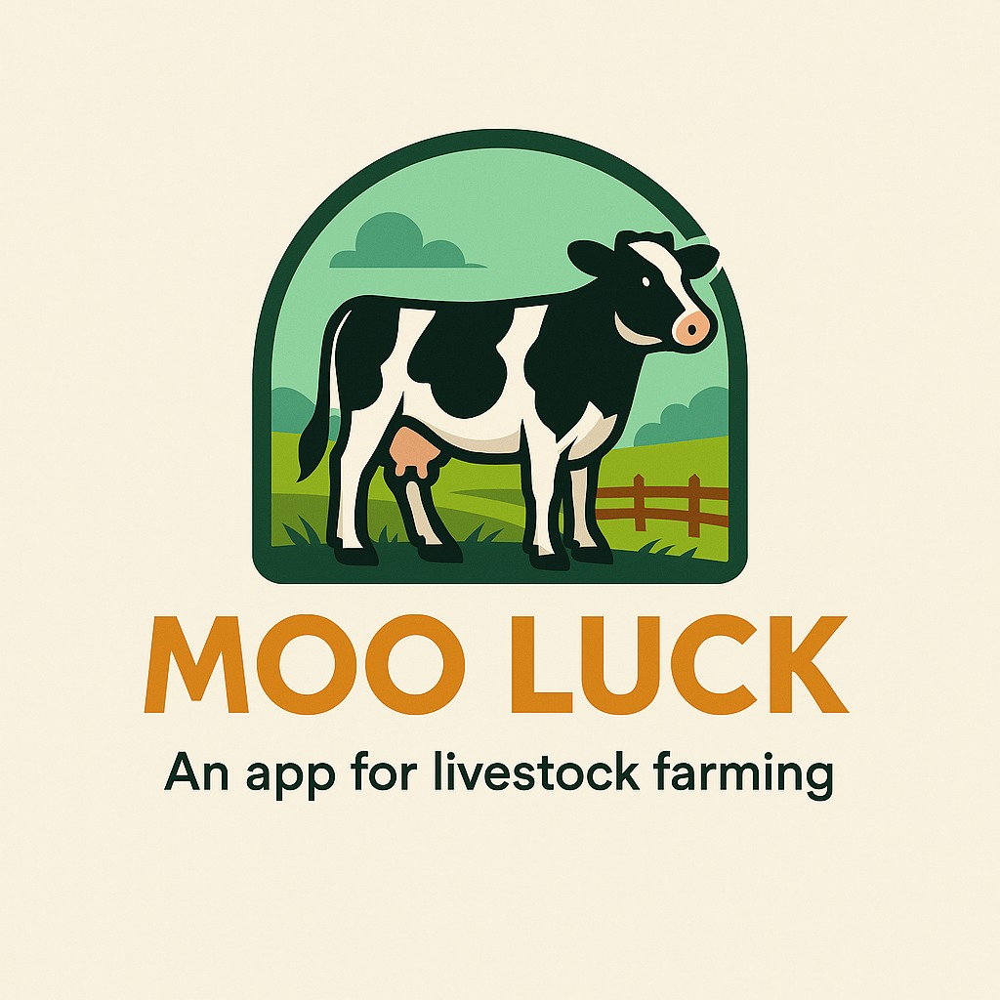

MOO LUCK es una innovadora aplicación diseñada para optimizar la gestión ganadera mediante tecnología inteligente. Proporciona herramientas clave para monitorear, analizar y mejorar la productividad del ganado.
Con MOO LUCK puedes aumentar la eficiencia, reducir costos y tomar decisiones informadas gracias a datos precisos. Una herramienta clave para la ganadería moderna.
La app es compatible con múltiples dispositivos y tiene una interfaz amigable. Permite trabajar sin conexión y sincroniza los datos al estar online.
¿Qué dispositivos son compatibles? Windows, Android y iOS.
¿Necesita internet? No, puede usarse offline y sincroniza luego.
¿Puedo exportar datos? Sí, en formatos como Excel y PDF.
📩 Email: contacto@mooluck.com
📞 Teléfono: +34 600 000 000
🌍 Sitio Web: www.mooluck.com